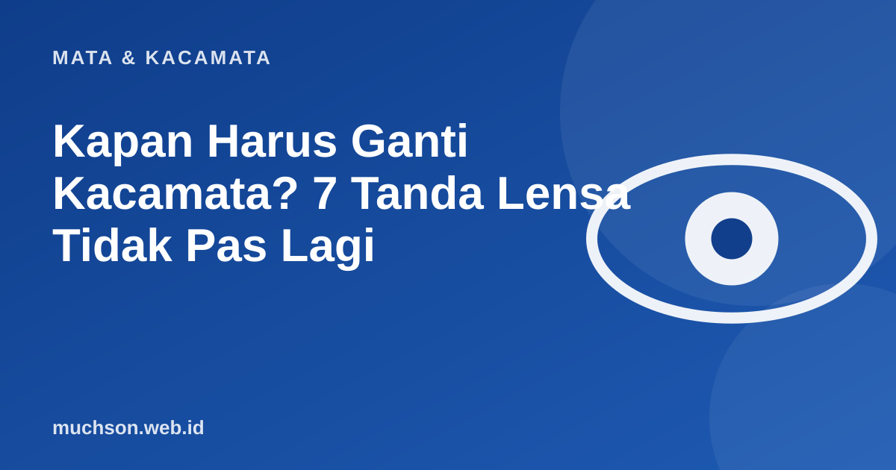

Beranda › Artikel › Mata & Kacamata
Mata & KacamataKapan Harus Ganti Kacamata? 7 Tanda Lensa Tidak Pas Lagi
Mata berubah pelan-pelan, sehingga kita sering terlambat menyadarinya. Kacamata yang sudah tidak sesuai tidak berbahaya, tetapi membuat mata bekerja lebih keras dan Anda lebih cepat lelah.

Tujuh tanda yang perlu diperhatikan
Ganti lensa saja atau seluruh kacamata?
| Kondisi | Tindakan yang masuk akal |
|---|---|
| Ukuran berubah, frame masih bagus | Ganti lensa saja dan pasang di frame lama |
| Frame bengkok, patah, atau tidak nyaman | Ganti frame, lensa mungkin bisa dipindah bila ukurannya cocok |
| Lensa tergores parah | Ganti lensa; pertimbangkan lapisan yang lebih baik |
| Frame dan lensa sama-sama tua | Ganti keduanya agar nyaman |
Persiapkan sebelum periksa
- Bawa kacamata lama dan resep sebelumnya.
- Catat keluhan: kapan terjadi, di jarak berapa, saat melakukan apa.
- Beritahu riwayat penyakit, obat yang dikonsumsi, dan riwayat keluarga.
- Hindari memakai lensa kontak beberapa jam sebelum pemeriksaan bila diminta.
Catatan
Mata lelah dan pusing yang tetap ada walau ukuran sudah tepat bisa punya penyebab lain. Itu alasan lain untuk memeriksakan diri, bukan hanya mengganti kacamata.
Tanya jawab
Apakah kacamata lama berbahaya bagi mata?
Tidak menyebabkan kerusakan permanen, tetapi bisa membuat mata lelah dan sakit kepala. Penglihatan yang tidak optimal juga memengaruhi keselamatan, misalnya saat mengemudi.
Berapa lama kacamata bisa dipakai?
Tidak ada batas pasti. Selama resep masih sesuai dan lensa serta frame dalam kondisi baik, bisa dipakai bertahun-tahun.
Apakah ukuran bisa berbeda antar optik?
Bisa sedikit berbeda karena alat dan metode. Karena itu, hasil pemeriksaan oleh dokter atau optometris yang sama lebih konsisten.